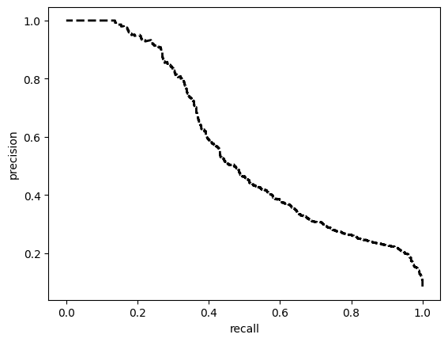
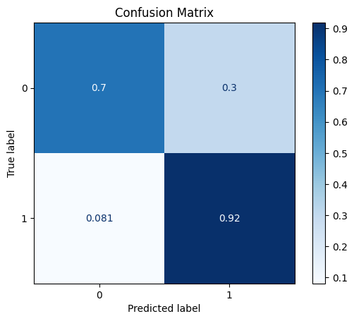
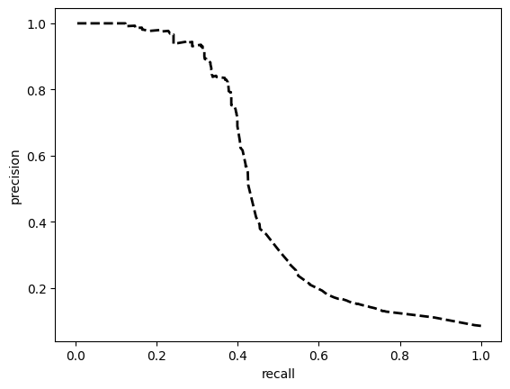
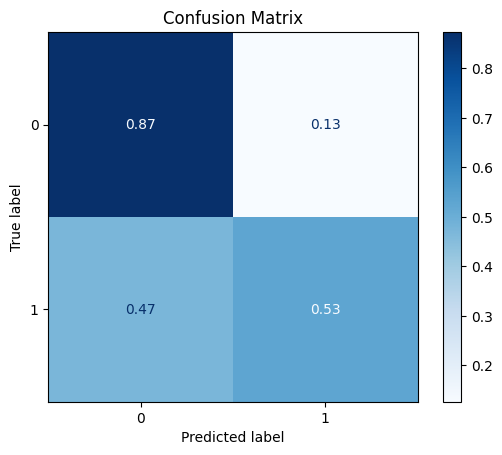
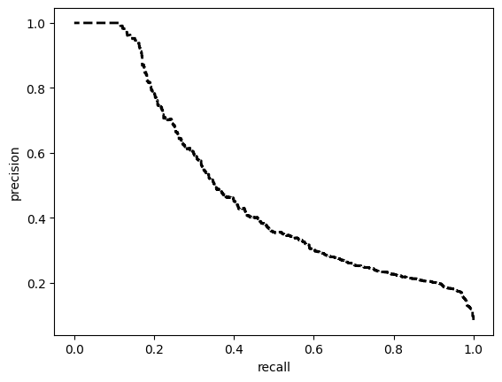
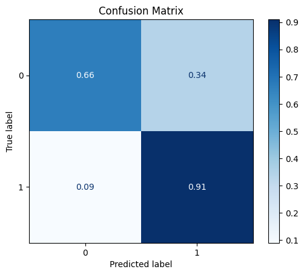
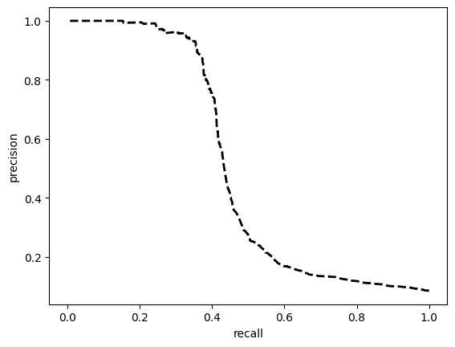
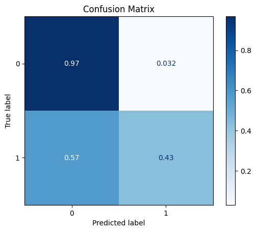

Simple Example
[1]:
import sys
sys.path.append('../../../notebooks')
import pandas as pd
import numpy as np
from sklearn.model_selection import train_test_split
from sklearn import metrics
import matplotlib.pyplot as plt
from raimitigations.utils import split_data, train_model_plot_results
from raimitigations.dataprocessing import (
Rebalance,
EncoderOrdinal,
EncoderOHE,
BasicImputer,
SeqFeatSelection,
CatBoostSelection,
Synthesizer,
Rebalance
)
from download import download_datasets
[2]:
data_dir = '../../../datasets/'
download_datasets(data_dir)
dataset = pd.read_csv(data_dir + 'hr_promotion/train.csv')
dataset.drop(columns=['employee_id'], inplace=True)
label_col = 'is_promoted'
dataset
[2]:
| department | region | education | gender | recruitment_channel | no_of_trainings | age | previous_year_rating | length_of_service | KPIs_met >80% | awards_won? | avg_training_score | is_promoted | |
|---|---|---|---|---|---|---|---|---|---|---|---|---|---|
| 0 | Sales & Marketing | region_7 | Master's & above | f | sourcing | 1 | 35 | 5.0 | 8 | 1 | 0 | 49 | 0 |
| 1 | Operations | region_22 | Bachelor's | m | other | 1 | 30 | 5.0 | 4 | 0 | 0 | 60 | 0 |
| 2 | Sales & Marketing | region_19 | Bachelor's | m | sourcing | 1 | 34 | 3.0 | 7 | 0 | 0 | 50 | 0 |
| 3 | Sales & Marketing | region_23 | Bachelor's | m | other | 2 | 39 | 1.0 | 10 | 0 | 0 | 50 | 0 |
| 4 | Technology | region_26 | Bachelor's | m | other | 1 | 45 | 3.0 | 2 | 0 | 0 | 73 | 0 |
| ... | ... | ... | ... | ... | ... | ... | ... | ... | ... | ... | ... | ... | ... |
| 54803 | Technology | region_14 | Bachelor's | m | sourcing | 1 | 48 | 3.0 | 17 | 0 | 0 | 78 | 0 |
| 54804 | Operations | region_27 | Master's & above | f | other | 1 | 37 | 2.0 | 6 | 0 | 0 | 56 | 0 |
| 54805 | Analytics | region_1 | Bachelor's | m | other | 1 | 27 | 5.0 | 3 | 1 | 0 | 79 | 0 |
| 54806 | Sales & Marketing | region_9 | NaN | m | sourcing | 1 | 29 | 1.0 | 2 | 0 | 0 | 45 | 0 |
| 54807 | HR | region_22 | Bachelor's | m | other | 1 | 27 | 1.0 | 5 | 0 | 0 | 49 | 0 |
54808 rows × 13 columns
1 - Base Model
Split the data into training and test sets.
[3]:
train_x, test_x, train_y, test_y = split_data(dataset, label_col, test_size=0.2)
org_train_x = train_x.copy()
org_train_y = train_y.copy()
org_test_x = test_x.copy()
org_test_y = test_y.copy()
train_x
[3]:
| department | region | education | gender | recruitment_channel | no_of_trainings | age | previous_year_rating | length_of_service | KPIs_met >80% | awards_won? | avg_training_score | |
|---|---|---|---|---|---|---|---|---|---|---|---|---|
| 33758 | Procurement | region_2 | Bachelor's | f | sourcing | 1 | 39 | 3.0 | 10 | 1 | 0 | 68 |
| 9792 | Sales & Marketing | region_15 | NaN | m | other | 1 | 32 | 2.0 | 3 | 1 | 0 | 48 |
| 30081 | Technology | region_22 | Master's & above | m | sourcing | 4 | 33 | 5.0 | 6 | 0 | 0 | 77 |
| 50328 | Legal | region_2 | Master's & above | m | sourcing | 2 | 35 | 3.0 | 3 | 0 | 0 | 60 |
| 13100 | Operations | region_7 | Bachelor's | f | other | 1 | 32 | 4.0 | 2 | 1 | 0 | 60 |
| ... | ... | ... | ... | ... | ... | ... | ... | ... | ... | ... | ... | ... |
| 17487 | Procurement | region_26 | Bachelor's | f | other | 2 | 25 | 3.0 | 3 | 0 | 0 | 74 |
| 39779 | Finance | region_8 | Bachelor's | m | sourcing | 2 | 27 | 4.0 | 2 | 1 | 0 | 53 |
| 13547 | Analytics | region_7 | Master's & above | m | sourcing | 1 | 45 | 3.0 | 3 | 1 | 0 | 90 |
| 28716 | R&D | region_11 | Master's & above | m | sourcing | 1 | 37 | 4.0 | 3 | 0 | 0 | 88 |
| 28553 | Procurement | region_14 | Master's & above | m | other | 1 | 37 | 2.0 | 10 | 0 | 0 | 68 |
43846 rows × 12 columns
Many models can’t handle categorical data and missing values, so we cannot train the model just yet. First we need to encode all categorical data and remove missing values.
[4]:
imputer = BasicImputer(specific_col={'previous_year_rating': { 'missing_values':np.nan,
'strategy':'constant',
'fill_value':-100 } } )
encoder = EncoderOrdinal(categories={'education': ["Below Secondary", "Bachelor's", "Master's & above"]})
imputer.fit(train_x)
train_x = imputer.transform(train_x)
test_x = imputer.transform(test_x)
train_x
No columns specified for imputation. These columns have been automatically identified:
['education', 'previous_year_rating']
[4]:
| department | region | education | gender | recruitment_channel | no_of_trainings | age | previous_year_rating | length_of_service | KPIs_met >80% | awards_won? | avg_training_score | |
|---|---|---|---|---|---|---|---|---|---|---|---|---|
| 33758 | Procurement | region_2 | Bachelor's | f | sourcing | 1 | 39 | 3.0 | 10 | 1 | 0 | 68 |
| 9792 | Sales & Marketing | region_15 | NULL | m | other | 1 | 32 | 2.0 | 3 | 1 | 0 | 48 |
| 30081 | Technology | region_22 | Master's & above | m | sourcing | 4 | 33 | 5.0 | 6 | 0 | 0 | 77 |
| 50328 | Legal | region_2 | Master's & above | m | sourcing | 2 | 35 | 3.0 | 3 | 0 | 0 | 60 |
| 13100 | Operations | region_7 | Bachelor's | f | other | 1 | 32 | 4.0 | 2 | 1 | 0 | 60 |
| ... | ... | ... | ... | ... | ... | ... | ... | ... | ... | ... | ... | ... |
| 17487 | Procurement | region_26 | Bachelor's | f | other | 2 | 25 | 3.0 | 3 | 0 | 0 | 74 |
| 39779 | Finance | region_8 | Bachelor's | m | sourcing | 2 | 27 | 4.0 | 2 | 1 | 0 | 53 |
| 13547 | Analytics | region_7 | Master's & above | m | sourcing | 1 | 45 | 3.0 | 3 | 1 | 0 | 90 |
| 28716 | R&D | region_11 | Master's & above | m | sourcing | 1 | 37 | 4.0 | 3 | 0 | 0 | 88 |
| 28553 | Procurement | region_14 | Master's & above | m | other | 1 | 37 | 2.0 | 10 | 0 | 0 | 68 |
43846 rows × 12 columns
[5]:
encoder.fit(train_x)
train_x = encoder.transform(train_x)
test_x = encoder.transform(test_x)
train_x
No columns specified for encoding. These columns have been automatically identfied as the following:
['department', 'region', 'education', 'gender', 'recruitment_channel']
[5]:
| department | region | education | gender | recruitment_channel | no_of_trainings | age | previous_year_rating | length_of_service | KPIs_met >80% | awards_won? | avg_training_score | |
|---|---|---|---|---|---|---|---|---|---|---|---|---|
| 33758 | 5 | 11 | 1 | 0 | 2 | 1 | 39 | 3.0 | 10 | 1 | 0 | 68 |
| 9792 | 7 | 6 | -1 | 1 | 0 | 1 | 32 | 2.0 | 3 | 1 | 0 | 48 |
| 30081 | 8 | 14 | 2 | 1 | 2 | 4 | 33 | 5.0 | 6 | 0 | 0 | 77 |
| 50328 | 3 | 11 | 2 | 1 | 2 | 2 | 35 | 3.0 | 3 | 0 | 0 | 60 |
| 13100 | 4 | 31 | 1 | 0 | 0 | 1 | 32 | 4.0 | 2 | 1 | 0 | 60 |
| ... | ... | ... | ... | ... | ... | ... | ... | ... | ... | ... | ... | ... |
| 17487 | 5 | 18 | 1 | 0 | 0 | 2 | 25 | 3.0 | 3 | 0 | 0 | 74 |
| 39779 | 1 | 32 | 1 | 1 | 2 | 2 | 27 | 4.0 | 2 | 1 | 0 | 53 |
| 13547 | 0 | 31 | 2 | 1 | 2 | 1 | 45 | 3.0 | 3 | 1 | 0 | 90 |
| 28716 | 6 | 2 | 2 | 1 | 2 | 1 | 37 | 4.0 | 3 | 0 | 0 | 88 |
| 28553 | 5 | 5 | 2 | 1 | 0 | 1 | 37 | 2.0 | 10 | 0 | 0 | 68 |
43846 rows × 12 columns
Now we create the model and train it using the training set. In the sequence, test its performance over the test set.
[6]:
model = train_model_plot_results(train_x, train_y, test_x, test_y, model="xgb", train_result=False)
TEST SET:

[[7042 2986]
[ 76 858]]

ROC AUC: 0.8931139490369151
Precision: 0.6062639191462251
Recall: 0.810431647916882
F1: 0.5902810799741827
Accuracy: 0.7206714103265828
Optimal Threshold (ROC curve): 0.11485043913125992
Optimal Threshold (Precision x Recall curve): 0.20340098440647125
Threshold used: 0.11485043913125992
2 - Feature Selection
[7]:
from sklearn.neighbors import KNeighborsClassifier
feat_sel = SeqFeatSelection(scoring='f1', n_jobs=4)
feat_sel.fit(X=train_x, y=train_y)
feat_sel.get_selected_features()
No columns specified for imputation. These columns have been automatically identified:
[]
No columns specified for encoding. These columns have been automatically identfied as the following:
[]
[Parallel(n_jobs=4)]: Using backend LokyBackend with 4 concurrent workers.
[Parallel(n_jobs=4)]: Done 12 out of 12 | elapsed: 1.0s remaining: 0.0s
[Parallel(n_jobs=4)]: Done 12 out of 12 | elapsed: 1.0s finished
[2022-10-25 10:12:26] Features: 1/12 -- score: 0.1931912046382492[Parallel(n_jobs=4)]: Using backend LokyBackend with 4 concurrent workers.
[Parallel(n_jobs=4)]: Done 11 out of 11 | elapsed: 0.2s finished
[2022-10-25 10:12:26] Features: 2/12 -- score: 0.4967097422285698[Parallel(n_jobs=4)]: Using backend LokyBackend with 4 concurrent workers.
[Parallel(n_jobs=4)]: Done 10 out of 10 | elapsed: 0.2s finished
[2022-10-25 10:12:26] Features: 3/12 -- score: 0.5026668595847746[Parallel(n_jobs=4)]: Using backend LokyBackend with 4 concurrent workers.
[Parallel(n_jobs=4)]: Done 7 out of 9 | elapsed: 0.2s remaining: 0.1s
[Parallel(n_jobs=4)]: Done 9 out of 9 | elapsed: 0.3s finished
[2022-10-25 10:12:27] Features: 4/12 -- score: 0.4991439989474202[Parallel(n_jobs=4)]: Using backend LokyBackend with 4 concurrent workers.
[Parallel(n_jobs=4)]: Done 6 out of 8 | elapsed: 0.2s remaining: 0.1s
[Parallel(n_jobs=4)]: Done 8 out of 8 | elapsed: 0.3s finished
[2022-10-25 10:12:27] Features: 5/12 -- score: 0.4911043697835786[Parallel(n_jobs=4)]: Using backend LokyBackend with 4 concurrent workers.
[Parallel(n_jobs=4)]: Done 4 out of 7 | elapsed: 0.1s remaining: 0.1s
[Parallel(n_jobs=4)]: Done 7 out of 7 | elapsed: 0.2s finished
[2022-10-25 10:12:28] Features: 6/12 -- score: 0.4775301876819394[Parallel(n_jobs=4)]: Using backend LokyBackend with 4 concurrent workers.
[Parallel(n_jobs=4)]: Done 3 out of 6 | elapsed: 0.1s remaining: 0.1s
[Parallel(n_jobs=4)]: Done 6 out of 6 | elapsed: 0.2s finished
[2022-10-25 10:12:28] Features: 7/12 -- score: 0.46144907890848175[Parallel(n_jobs=4)]: Using backend LokyBackend with 4 concurrent workers.
[Parallel(n_jobs=4)]: Done 5 out of 5 | elapsed: 0.2s finished
[2022-10-25 10:12:28] Features: 8/12 -- score: 0.44481880301469073[Parallel(n_jobs=4)]: Using backend LokyBackend with 4 concurrent workers.
[Parallel(n_jobs=4)]: Done 4 out of 4 | elapsed: 0.2s finished
[2022-10-25 10:12:28] Features: 9/12 -- score: 0.41702774110516766[Parallel(n_jobs=3)]: Using backend LokyBackend with 3 concurrent workers.
[Parallel(n_jobs=3)]: Done 3 out of 3 | elapsed: 0.3s finished
[2022-10-25 10:12:29] Features: 10/12 -- score: 0.4201593117361067[Parallel(n_jobs=2)]: Using backend LokyBackend with 2 concurrent workers.
[Parallel(n_jobs=2)]: Done 2 out of 2 | elapsed: 1.0s finished
[2022-10-25 10:12:30] Features: 11/12 -- score: 0.38319539428601485[Parallel(n_jobs=1)]: Using backend SequentialBackend with 1 concurrent workers.
[Parallel(n_jobs=1)]: Done 1 out of 1 | elapsed: 0.1s remaining: 0.0s
[Parallel(n_jobs=1)]: Done 1 out of 1 | elapsed: 0.1s finished
[2022-10-25 10:12:30] Features: 12/12 -- score: 0.3567176045389587
[7]:
['department', 'awards_won?', 'avg_training_score']
[8]:
train_x = feat_sel.transform(train_x)
test_x = feat_sel.transform(test_x)
train_x
[8]:
| department | awards_won? | avg_training_score | |
|---|---|---|---|
| 33758 | 5 | 0 | 68 |
| 9792 | 7 | 0 | 48 |
| 30081 | 8 | 0 | 77 |
| 50328 | 3 | 0 | 60 |
| 13100 | 4 | 0 | 60 |
| ... | ... | ... | ... |
| 17487 | 5 | 0 | 74 |
| 39779 | 1 | 0 | 53 |
| 13547 | 0 | 0 | 90 |
| 28716 | 6 | 0 | 88 |
| 28553 | 5 | 0 | 68 |
43846 rows × 3 columns
[9]:
model = train_model_plot_results(train_x, train_y, test_x, test_y, model="xgb", train_result=False)
TEST SET:

[[8756 1272]
[ 442 492]]

ROC AUC: 0.7554767422096075
Precision: 0.6154288199297984
Recall: 0.6999608804127886
F1: 0.6377822470914225
Accuracy: 0.8436416712278781
Optimal Threshold (ROC curve): 0.10499062389135361
Optimal Threshold (Precision x Recall curve): 0.2508904039859772
Threshold used: 0.10499062389135361
3 - Generating Synthetic Data + Feature Selection
[10]:
dataset[label_col].value_counts(normalize=True)
[10]:
0 0.91483
1 0.08517
Name: is_promoted, dtype: float64
[11]:
train_df = org_train_x.copy()
train_df[label_col] = org_train_y
test_x = org_test_x
test_y = org_test_y
train_df[label_col].value_counts(normalize=True)
[11]:
0 0.914838
1 0.085162
Name: is_promoted, dtype: float64
[12]:
synth = Synthesizer(
df=train_df,
label_col=label_col,
model='ctgan',
epochs=150,
load_existing=False
)
synth.fit()
balance_train = synth.transform(df=train_df, strategy=0.3)
balance_train[label_col].value_counts(normalize=True)
/home/matheus/miniconda3/envs/rai/lib/python3.9/site-packages/sklearn/mixture/_base.py:286: ConvergenceWarning: Initialization 1 did not converge. Try different init parameters, or increase max_iter, tol or check for degenerate data.
warnings.warn(
/home/matheus/miniconda3/envs/rai/lib/python3.9/site-packages/sklearn/mixture/_base.py:131: ConvergenceWarning: Number of distinct clusters (6) found smaller than n_clusters (10). Possibly due to duplicate points in X.
cluster.KMeans(
/home/matheus/miniconda3/envs/rai/lib/python3.9/site-packages/sklearn/mixture/_base.py:286: ConvergenceWarning: Initialization 1 did not converge. Try different init parameters, or increase max_iter, tol or check for degenerate data.
warnings.warn(
/home/matheus/miniconda3/envs/rai/lib/python3.9/site-packages/sklearn/mixture/_base.py:286: ConvergenceWarning: Initialization 1 did not converge. Try different init parameters, or increase max_iter, tol or check for degenerate data.
warnings.warn(
/home/matheus/miniconda3/envs/rai/lib/python3.9/site-packages/ctgan/data_transformer.py:111: SettingWithCopyWarning:
A value is trying to be set on a copy of a slice from a DataFrame.
Try using .loc[row_indexer,col_indexer] = value instead
See the caveats in the documentation: https://pandas.pydata.org/pandas-docs/stable/user_guide/indexing.html#returning-a-view-versus-a-copy
data[column_name] = data[column_name].to_numpy().flatten()
/home/matheus/miniconda3/envs/rai/lib/python3.9/site-packages/ctgan/data_transformer.py:111: SettingWithCopyWarning:
A value is trying to be set on a copy of a slice from a DataFrame.
Try using .loc[row_indexer,col_indexer] = value instead
See the caveats in the documentation: https://pandas.pydata.org/pandas-docs/stable/user_guide/indexing.html#returning-a-view-versus-a-copy
data[column_name] = data[column_name].to_numpy().flatten()
/home/matheus/miniconda3/envs/rai/lib/python3.9/site-packages/ctgan/data_transformer.py:111: SettingWithCopyWarning:
A value is trying to be set on a copy of a slice from a DataFrame.
Try using .loc[row_indexer,col_indexer] = value instead
See the caveats in the documentation: https://pandas.pydata.org/pandas-docs/stable/user_guide/indexing.html#returning-a-view-versus-a-copy
data[column_name] = data[column_name].to_numpy().flatten()
/home/matheus/miniconda3/envs/rai/lib/python3.9/site-packages/ctgan/data_transformer.py:111: SettingWithCopyWarning:
A value is trying to be set on a copy of a slice from a DataFrame.
Try using .loc[row_indexer,col_indexer] = value instead
See the caveats in the documentation: https://pandas.pydata.org/pandas-docs/stable/user_guide/indexing.html#returning-a-view-versus-a-copy
data[column_name] = data[column_name].to_numpy().flatten()
/home/matheus/miniconda3/envs/rai/lib/python3.9/site-packages/ctgan/data_transformer.py:111: SettingWithCopyWarning:
A value is trying to be set on a copy of a slice from a DataFrame.
Try using .loc[row_indexer,col_indexer] = value instead
See the caveats in the documentation: https://pandas.pydata.org/pandas-docs/stable/user_guide/indexing.html#returning-a-view-versus-a-copy
data[column_name] = data[column_name].to_numpy().flatten()
Sampling conditions: 0%| | 0/8299 [00:00<?, ?it/s]/home/matheus/miniconda3/envs/rai/lib/python3.9/site-packages/sdv/tabular/base.py:608: FutureWarning: In a future version of pandas, a length 1 tuple will be returned when iterating over a groupby with a grouper equal to a list of length 1. Don't supply a list with a single grouper to avoid this warning.
for group, dataframe in grouped_conditions:
/home/matheus/miniconda3/envs/rai/lib/python3.9/site-packages/sdv/tabular/base.py:639: FutureWarning: In a future version of pandas, a length 1 tuple will be returned when iterating over a groupby with a grouper equal to a list of length 1. Don't supply a list with a single grouper to avoid this warning.
for transformed_group, transformed_dataframe in transformed_groups:
/home/matheus/miniconda3/envs/rai/lib/python3.9/site-packages/ctgan/data_transformer.py:149: FutureWarning: In a future version, `df.iloc[:, i] = newvals` will attempt to set the values inplace instead of always setting a new array. To retain the old behavior, use either `df[df.columns[i]] = newvals` or, if columns are non-unique, `df.isetitem(i, newvals)`
data.iloc[:, 1] = np.argmax(column_data[:, 1:], axis=1)
/home/matheus/miniconda3/envs/rai/lib/python3.9/site-packages/ctgan/data_transformer.py:149: FutureWarning: In a future version, `df.iloc[:, i] = newvals` will attempt to set the values inplace instead of always setting a new array. To retain the old behavior, use either `df[df.columns[i]] = newvals` or, if columns are non-unique, `df.isetitem(i, newvals)`
data.iloc[:, 1] = np.argmax(column_data[:, 1:], axis=1)
/home/matheus/miniconda3/envs/rai/lib/python3.9/site-packages/ctgan/data_transformer.py:149: FutureWarning: In a future version, `df.iloc[:, i] = newvals` will attempt to set the values inplace instead of always setting a new array. To retain the old behavior, use either `df[df.columns[i]] = newvals` or, if columns are non-unique, `df.isetitem(i, newvals)`
data.iloc[:, 1] = np.argmax(column_data[:, 1:], axis=1)
/home/matheus/miniconda3/envs/rai/lib/python3.9/site-packages/ctgan/data_transformer.py:149: FutureWarning: In a future version, `df.iloc[:, i] = newvals` will attempt to set the values inplace instead of always setting a new array. To retain the old behavior, use either `df[df.columns[i]] = newvals` or, if columns are non-unique, `df.isetitem(i, newvals)`
data.iloc[:, 1] = np.argmax(column_data[:, 1:], axis=1)
/home/matheus/miniconda3/envs/rai/lib/python3.9/site-packages/ctgan/data_transformer.py:149: FutureWarning: In a future version, `df.iloc[:, i] = newvals` will attempt to set the values inplace instead of always setting a new array. To retain the old behavior, use either `df[df.columns[i]] = newvals` or, if columns are non-unique, `df.isetitem(i, newvals)`
data.iloc[:, 1] = np.argmax(column_data[:, 1:], axis=1)
Sampling conditions: 18%|█▊ | 1465/8299 [00:00<00:01, 4109.27it/s]/home/matheus/miniconda3/envs/rai/lib/python3.9/site-packages/ctgan/data_transformer.py:149: FutureWarning: In a future version, `df.iloc[:, i] = newvals` will attempt to set the values inplace instead of always setting a new array. To retain the old behavior, use either `df[df.columns[i]] = newvals` or, if columns are non-unique, `df.isetitem(i, newvals)`
data.iloc[:, 1] = np.argmax(column_data[:, 1:], axis=1)
/home/matheus/miniconda3/envs/rai/lib/python3.9/site-packages/ctgan/data_transformer.py:149: FutureWarning: In a future version, `df.iloc[:, i] = newvals` will attempt to set the values inplace instead of always setting a new array. To retain the old behavior, use either `df[df.columns[i]] = newvals` or, if columns are non-unique, `df.isetitem(i, newvals)`
data.iloc[:, 1] = np.argmax(column_data[:, 1:], axis=1)
/home/matheus/miniconda3/envs/rai/lib/python3.9/site-packages/ctgan/data_transformer.py:149: FutureWarning: In a future version, `df.iloc[:, i] = newvals` will attempt to set the values inplace instead of always setting a new array. To retain the old behavior, use either `df[df.columns[i]] = newvals` or, if columns are non-unique, `df.isetitem(i, newvals)`
data.iloc[:, 1] = np.argmax(column_data[:, 1:], axis=1)
/home/matheus/miniconda3/envs/rai/lib/python3.9/site-packages/ctgan/data_transformer.py:149: FutureWarning: In a future version, `df.iloc[:, i] = newvals` will attempt to set the values inplace instead of always setting a new array. To retain the old behavior, use either `df[df.columns[i]] = newvals` or, if columns are non-unique, `df.isetitem(i, newvals)`
data.iloc[:, 1] = np.argmax(column_data[:, 1:], axis=1)
/home/matheus/miniconda3/envs/rai/lib/python3.9/site-packages/ctgan/data_transformer.py:149: FutureWarning: In a future version, `df.iloc[:, i] = newvals` will attempt to set the values inplace instead of always setting a new array. To retain the old behavior, use either `df[df.columns[i]] = newvals` or, if columns are non-unique, `df.isetitem(i, newvals)`
data.iloc[:, 1] = np.argmax(column_data[:, 1:], axis=1)
Sampling conditions: 98%|█████████▊| 8153/8299 [00:01<00:00, 7530.84it/s]/home/matheus/miniconda3/envs/rai/lib/python3.9/site-packages/ctgan/data_transformer.py:149: FutureWarning: In a future version, `df.iloc[:, i] = newvals` will attempt to set the values inplace instead of always setting a new array. To retain the old behavior, use either `df[df.columns[i]] = newvals` or, if columns are non-unique, `df.isetitem(i, newvals)`
data.iloc[:, 1] = np.argmax(column_data[:, 1:], axis=1)
/home/matheus/miniconda3/envs/rai/lib/python3.9/site-packages/ctgan/data_transformer.py:149: FutureWarning: In a future version, `df.iloc[:, i] = newvals` will attempt to set the values inplace instead of always setting a new array. To retain the old behavior, use either `df[df.columns[i]] = newvals` or, if columns are non-unique, `df.isetitem(i, newvals)`
data.iloc[:, 1] = np.argmax(column_data[:, 1:], axis=1)
/home/matheus/miniconda3/envs/rai/lib/python3.9/site-packages/ctgan/data_transformer.py:149: FutureWarning: In a future version, `df.iloc[:, i] = newvals` will attempt to set the values inplace instead of always setting a new array. To retain the old behavior, use either `df[df.columns[i]] = newvals` or, if columns are non-unique, `df.isetitem(i, newvals)`
data.iloc[:, 1] = np.argmax(column_data[:, 1:], axis=1)
/home/matheus/miniconda3/envs/rai/lib/python3.9/site-packages/ctgan/data_transformer.py:149: FutureWarning: In a future version, `df.iloc[:, i] = newvals` will attempt to set the values inplace instead of always setting a new array. To retain the old behavior, use either `df[df.columns[i]] = newvals` or, if columns are non-unique, `df.isetitem(i, newvals)`
data.iloc[:, 1] = np.argmax(column_data[:, 1:], axis=1)
/home/matheus/miniconda3/envs/rai/lib/python3.9/site-packages/ctgan/data_transformer.py:149: FutureWarning: In a future version, `df.iloc[:, i] = newvals` will attempt to set the values inplace instead of always setting a new array. To retain the old behavior, use either `df[df.columns[i]] = newvals` or, if columns are non-unique, `df.isetitem(i, newvals)`
data.iloc[:, 1] = np.argmax(column_data[:, 1:], axis=1)
/home/matheus/miniconda3/envs/rai/lib/python3.9/site-packages/ctgan/data_transformer.py:149: FutureWarning: In a future version, `df.iloc[:, i] = newvals` will attempt to set the values inplace instead of always setting a new array. To retain the old behavior, use either `df[df.columns[i]] = newvals` or, if columns are non-unique, `df.isetitem(i, newvals)`
data.iloc[:, 1] = np.argmax(column_data[:, 1:], axis=1)
/home/matheus/miniconda3/envs/rai/lib/python3.9/site-packages/ctgan/data_transformer.py:149: FutureWarning: In a future version, `df.iloc[:, i] = newvals` will attempt to set the values inplace instead of always setting a new array. To retain the old behavior, use either `df[df.columns[i]] = newvals` or, if columns are non-unique, `df.isetitem(i, newvals)`
data.iloc[:, 1] = np.argmax(column_data[:, 1:], axis=1)
/home/matheus/miniconda3/envs/rai/lib/python3.9/site-packages/ctgan/data_transformer.py:149: FutureWarning: In a future version, `df.iloc[:, i] = newvals` will attempt to set the values inplace instead of always setting a new array. To retain the old behavior, use either `df[df.columns[i]] = newvals` or, if columns are non-unique, `df.isetitem(i, newvals)`
data.iloc[:, 1] = np.argmax(column_data[:, 1:], axis=1)
/home/matheus/miniconda3/envs/rai/lib/python3.9/site-packages/ctgan/data_transformer.py:149: FutureWarning: In a future version, `df.iloc[:, i] = newvals` will attempt to set the values inplace instead of always setting a new array. To retain the old behavior, use either `df[df.columns[i]] = newvals` or, if columns are non-unique, `df.isetitem(i, newvals)`
data.iloc[:, 1] = np.argmax(column_data[:, 1:], axis=1)
/home/matheus/miniconda3/envs/rai/lib/python3.9/site-packages/ctgan/data_transformer.py:149: FutureWarning: In a future version, `df.iloc[:, i] = newvals` will attempt to set the values inplace instead of always setting a new array. To retain the old behavior, use either `df[df.columns[i]] = newvals` or, if columns are non-unique, `df.isetitem(i, newvals)`
data.iloc[:, 1] = np.argmax(column_data[:, 1:], axis=1)
Sampling conditions: 100%|██████████| 8299/8299 [00:01<00:00, 6773.62it/s]
[12]:
0 0.76924
1 0.23076
Name: is_promoted, dtype: float64
[13]:
train_x = balance_train.drop(columns=[label_col])
train_y = balance_train[label_col]
imputer = BasicImputer(specific_col={'previous_year_rating': { 'missing_values':np.nan,
'strategy':'constant',
'fill_value':-100 } } )
encoder = EncoderOrdinal(categories={'education': ["Below Secondary", "Bachelor's", "Master's & above"]})
imputer.fit(train_x)
train_x = imputer.transform(train_x)
test_x = imputer.transform(test_x)
encoder.fit(train_x)
train_x = encoder.transform(train_x)
test_x = encoder.transform(test_x)
model = train_model_plot_results(train_x, train_y, test_x, test_y, model="xgb", train_result=False)
No columns specified for imputation. These columns have been automatically identified:
['education', 'previous_year_rating']
No columns specified for encoding. These columns have been automatically identfied as the following:
['department', 'region', 'education', 'gender', 'recruitment_channel']
TEST SET:

[[6623 3405]
[ 84 850]]

ROC AUC: 0.8670331743495088
Precision: 0.5936203769778037
Recall: 0.7852574888812396
F1: 0.5595654501838281
Accuracy: 0.6817186644772851
Optimal Threshold (ROC curve): 0.21035872399806976
Optimal Threshold (Precision x Recall curve): 0.39564475417137146
Threshold used: 0.21035872399806976
[14]:
feat_sel = SeqFeatSelection(scoring='f1', n_jobs=4)
feat_sel.fit(X=train_x, y=train_y)
print(f"SELECTED FEATURES: {feat_sel.get_selected_features()}")
train_x_feat = feat_sel.transform(train_x)
test_x_feat = feat_sel.transform(test_x)
model = train_model_plot_results(train_x, train_y, test_x, test_y, model="xgb", train_result=False)
No columns specified for imputation. These columns have been automatically identified:
[]
No columns specified for encoding. These columns have been automatically identfied as the following:
[]
[Parallel(n_jobs=4)]: Using backend LokyBackend with 4 concurrent workers.
[Parallel(n_jobs=4)]: Done 12 out of 12 | elapsed: 0.9s remaining: 0.0s
[Parallel(n_jobs=4)]: Done 12 out of 12 | elapsed: 0.9s finished
[2022-10-25 10:17:47] Features: 1/12 -- score: 0.20592887926502257[Parallel(n_jobs=4)]: Using backend LokyBackend with 4 concurrent workers.
[Parallel(n_jobs=4)]: Done 11 out of 11 | elapsed: 0.1s finished
[2022-10-25 10:17:48] Features: 2/12 -- score: 0.2639678881869736[Parallel(n_jobs=4)]: Using backend LokyBackend with 4 concurrent workers.
[Parallel(n_jobs=4)]: Done 10 out of 10 | elapsed: 0.2s finished
[2022-10-25 10:17:48] Features: 3/12 -- score: 0.4590688345129712[Parallel(n_jobs=4)]: Using backend LokyBackend with 4 concurrent workers.
[Parallel(n_jobs=4)]: Done 7 out of 9 | elapsed: 0.2s remaining: 0.1s
[Parallel(n_jobs=4)]: Done 9 out of 9 | elapsed: 0.2s finished
[2022-10-25 10:17:48] Features: 4/12 -- score: 0.4575717715962757[Parallel(n_jobs=4)]: Using backend LokyBackend with 4 concurrent workers.
[Parallel(n_jobs=4)]: Done 6 out of 8 | elapsed: 0.2s remaining: 0.1s
[Parallel(n_jobs=4)]: Done 8 out of 8 | elapsed: 0.2s finished
[2022-10-25 10:17:49] Features: 5/12 -- score: 0.45292422018477535[Parallel(n_jobs=4)]: Using backend LokyBackend with 4 concurrent workers.
[Parallel(n_jobs=4)]: Done 4 out of 7 | elapsed: 0.1s remaining: 0.1s
[Parallel(n_jobs=4)]: Done 7 out of 7 | elapsed: 0.2s finished
[2022-10-25 10:17:49] Features: 6/12 -- score: 0.45380308967736155[Parallel(n_jobs=4)]: Using backend LokyBackend with 4 concurrent workers.
[Parallel(n_jobs=4)]: Done 3 out of 6 | elapsed: 0.1s remaining: 0.1s
[Parallel(n_jobs=4)]: Done 6 out of 6 | elapsed: 0.2s finished
[2022-10-25 10:17:49] Features: 7/12 -- score: 0.44967752578151643[Parallel(n_jobs=4)]: Using backend LokyBackend with 4 concurrent workers.
[Parallel(n_jobs=4)]: Done 5 out of 5 | elapsed: 0.2s finished
[2022-10-25 10:17:49] Features: 8/12 -- score: 0.45748074234460034[Parallel(n_jobs=4)]: Using backend LokyBackend with 4 concurrent workers.
[Parallel(n_jobs=4)]: Done 4 out of 4 | elapsed: 0.2s finished
[2022-10-25 10:17:50] Features: 9/12 -- score: 0.451101876367842[Parallel(n_jobs=3)]: Using backend LokyBackend with 3 concurrent workers.
[Parallel(n_jobs=3)]: Done 3 out of 3 | elapsed: 0.3s finished
[2022-10-25 10:17:50] Features: 10/12 -- score: 0.45446096664474994[Parallel(n_jobs=2)]: Using backend LokyBackend with 2 concurrent workers.
[Parallel(n_jobs=2)]: Done 2 out of 2 | elapsed: 0.9s finished
[2022-10-25 10:17:51] Features: 11/12 -- score: 0.45609394311861323[Parallel(n_jobs=1)]: Using backend SequentialBackend with 1 concurrent workers.
[Parallel(n_jobs=1)]: Done 1 out of 1 | elapsed: 0.2s remaining: 0.0s
[Parallel(n_jobs=1)]: Done 1 out of 1 | elapsed: 0.2s finished
[2022-10-25 10:17:52] Features: 12/12 -- score: 0.43561266744306537
SELECTED FEATURES: ['department', 'awards_won?', 'avg_training_score']
TEST SET:
[[6623 3405]
[ 84 850]]
ROC AUC: 0.8670331743495088
Precision: 0.5936203769778037
Recall: 0.7852574888812396
F1: 0.5595654501838281
Accuracy: 0.6817186644772851
Optimal Threshold (ROC curve): 0.21035872399806976
Optimal Threshold (Precision x Recall curve): 0.39564475417137146
Threshold used: 0.21035872399806976
4 - Feature Selection + Synthetic Data
[15]:
train_x = org_train_x
train_y = org_train_y
test_x = org_test_x
test_y = org_test_y
imputer = BasicImputer(specific_col={'previous_year_rating': { 'missing_values':np.nan,
'strategy':'constant',
'fill_value':-100 } } )
encoder = EncoderOHE()
feat_sel = SeqFeatSelection(scoring='f1', transform_pipe=[imputer, encoder], n_jobs=4, verbose=False)
feat_sel.fit(X=train_x, y=train_y)
print(f"SELECTED FEATURES: {feat_sel.get_selected_features()}")
train_x = feat_sel.transform(train_x)
test_x = feat_sel.transform(test_x)
model = train_model_plot_results(train_x, train_y, test_x, test_y, model="xgb", train_result=False)
No columns specified for imputation. These columns have been automatically identified:
['education', 'previous_year_rating']
No columns specified for encoding. These columns have been automatically identfied as the following:
['department', 'region', 'education', 'gender', 'recruitment_channel']
SELECTED FEATURES: ['awards_won?', 'avg_training_score', 'department_Finance', 'department_HR', 'department_Legal', 'department_Operations', 'department_Procurement', 'department_Sales & Marketing', 'department_Technology', "education_Master's & above"]
TEST SET:
[[8639 1389]
[ 426 508]]
ROC AUC: 0.7596129659223981
Precision: 0.6103986583164233
Recall: 0.7026925251693545
F1: 0.631911384760566
Accuracy: 0.8344280240831965
Optimal Threshold (ROC curve): 0.10077095776796341
Optimal Threshold (Precision x Recall curve): 0.2247779816389084
Threshold used: 0.10077095776796341
[16]:
train_df = train_x
train_df[label_col] = train_y
test_df = test_x
test_df[label_col] = test_y
synth = Synthesizer(
df=train_df,
label_col=label_col,
model='ctgan',
epochs=130,
load_existing=False
)
synth.fit()
balance_train = synth.transform(df=train_df, strategy=0.3)
balance_train[label_col].value_counts(normalize=True)
/home/matheus/miniconda3/envs/rai/lib/python3.9/site-packages/sklearn/mixture/_base.py:286: ConvergenceWarning: Initialization 1 did not converge. Try different init parameters, or increase max_iter, tol or check for degenerate data.
warnings.warn(
/home/matheus/miniconda3/envs/rai/lib/python3.9/site-packages/ctgan/data_transformer.py:111: SettingWithCopyWarning:
A value is trying to be set on a copy of a slice from a DataFrame.
Try using .loc[row_indexer,col_indexer] = value instead
See the caveats in the documentation: https://pandas.pydata.org/pandas-docs/stable/user_guide/indexing.html#returning-a-view-versus-a-copy
data[column_name] = data[column_name].to_numpy().flatten()
Sampling conditions: 0%| | 0/8299 [00:00<?, ?it/s]/home/matheus/miniconda3/envs/rai/lib/python3.9/site-packages/sdv/tabular/base.py:608: FutureWarning: In a future version of pandas, a length 1 tuple will be returned when iterating over a groupby with a grouper equal to a list of length 1. Don't supply a list with a single grouper to avoid this warning.
for group, dataframe in grouped_conditions:
/home/matheus/miniconda3/envs/rai/lib/python3.9/site-packages/sdv/tabular/base.py:639: FutureWarning: In a future version of pandas, a length 1 tuple will be returned when iterating over a groupby with a grouper equal to a list of length 1. Don't supply a list with a single grouper to avoid this warning.
for transformed_group, transformed_dataframe in transformed_groups:
/home/matheus/miniconda3/envs/rai/lib/python3.9/site-packages/ctgan/data_transformer.py:149: FutureWarning: In a future version, `df.iloc[:, i] = newvals` will attempt to set the values inplace instead of always setting a new array. To retain the old behavior, use either `df[df.columns[i]] = newvals` or, if columns are non-unique, `df.isetitem(i, newvals)`
data.iloc[:, 1] = np.argmax(column_data[:, 1:], axis=1)
Sampling conditions: 13%|█▎ | 1117/8299 [00:00<00:03, 2301.04it/s]/home/matheus/miniconda3/envs/rai/lib/python3.9/site-packages/ctgan/data_transformer.py:149: FutureWarning: In a future version, `df.iloc[:, i] = newvals` will attempt to set the values inplace instead of always setting a new array. To retain the old behavior, use either `df[df.columns[i]] = newvals` or, if columns are non-unique, `df.isetitem(i, newvals)`
data.iloc[:, 1] = np.argmax(column_data[:, 1:], axis=1)
Sampling conditions: 100%|██████████| 8299/8299 [00:02<00:00, 2831.28it/s]
[16]:
0 0.76924
1 0.23076
Name: is_promoted, dtype: float64
[17]:
train_x = balance_train.drop(columns=[label_col])
train_y = balance_train[label_col]
test_x = test_df.drop(columns=[label_col])
test_y = test_df[label_col]
model = train_model_plot_results(train_x, train_y, test_x, test_y, model="xgb", train_result=False)
TEST SET:

[[9712 316]
[ 534 400]]

ROC AUC: 0.7403760370320707
Precision: 0.7532706591044659
Recall: 0.698376878786507
F1: 0.7214614329145256
Accuracy: 0.9224594052180259
Optimal Threshold (ROC curve): 0.35927507281303406
Optimal Threshold (Precision x Recall curve): 0.4259410798549652
Threshold used: 0.35927507281303406